SIO-DPROMA
Qué cambió respecto a las maquetas originales, por qué, y qué tiene que resolver quien lo construya.
Las cuatro pantallas del módulo de clientes se rediseñaron sobre las maquetas que DPROMA entregó, aplicando los hallazgos del informe de recomendaciones del padrón. El resultado vive en cuatro archivos HTML navegables, en un sistema de diseño de 1.510 líneas y en un registro de decisiones de producto.
Este documento reúne lo que hace falta para construirlo: el diff real contra cada original, el patrón nuevo con su código, y —lo que las maquetas no pueden contar— qué tiene que resolver el backend detrás de cada pantalla.
Las capturas de este documento son fijas: no muestran el foco, ni el paso del cursor, ni la transición entre estados, ni cómo se reordena la pantalla al estrecharla. Para eso están las maquetas, que se abren en cualquier navegador:
| Pantalla | Archivo | Dirección |
|---|---|---|
| Padrón de clientes | padron-clientes.html | …/propuestas/padron-clientes |
| Ficha de cliente 360° | ficha-cliente.html | …/propuestas/ficha-cliente |
| Alta de cliente | alta-cliente.html | …/propuestas/alta-cliente |
| Editar cliente (diálogo) | editar-cliente.html | …/propuestas/editar-cliente |
| Acceso al sistema | acceso-sio-dproma.html | …/propuestas/acceso-sio-dproma |
Todas llevan abajo un panel de andamiaje —[data-andamio]— para ver la pantalla
en sus cuatro estados sin tocar código. No es una función del producto: se retira al
construir. En las capturas de este documento va oculto.
El acceso al sistema se cita como referencia —de ahí salieron el sistema de diseño y el patrón de estados— pero no se documenta su «antes»: no disponemos de su maqueta original, y reconstruirla de memoria sería inventarla.
Todas las cifras de esta tabla se recalculan desde los archivos con el script
docs/entrega/metricas.py. No son estimaciones.
| Medida | Padrón | Ficha | Alta | Editar |
|---|---|---|---|---|
| Líneas de archivo | 932 → 1.319 | 952 → 1.051 | 807 → 933 | 1.019 → 941 |
| Símbolos SVG de trazo | 39 → 1 | 39 → 1 | 39 → 1 | 39 → 1 |
| Iconos Material | 0 → 123 | 0 → 95 | 0 → 33 | 0 → 30 |
Regiones aria-live | 0 → 1 | 0 → 1 | 0 → 1 | 0 → 1 |
id repetidos | 0 | 4 → 0 | 0 | 2 → 0 |
Campos type="file" | — | — | 0 → 6 | — |
| Campos obligatorios reales | — | — | 0 → 5 | 0 → 2 |
| Declaraciones bajo 12 px | 28 → 5 | 23 → 6 | 22 → 5 | 20 → 5 |
| Manejadores de evento | 6 → 28 | 6 → 9 | 6 → 11 | 6 → 13 |
Las declaraciones bajo 12 px no llegan a cero, y no deben. Las que quedan son
todas de 10.5px: rótulos de grupo en mayúsculas con letter-spacing
—«CLASIFICACIÓN», «PARA FACTURAR»—, que es la única excepción que admite el suelo tipográfico
del sistema (§2.1). Las que se fueron eran las que sí dolían: el RFC a 11 px bajo cada
razón social, las píldoras de estado, las cabeceras de tabla.
«Editar» encoge, y es lo correcto. Es la única pantalla que pierde líneas
(1.019 → 941) porque cambió de naturaleza: el original era un documento anotado
sobre un diálogo dibujado a mano; el nuevo es un diálogo que funciona. La
especificación en prosa salió del HTML y vive ahora en
docs/patron-dialogo-sio-dproma.md.
| Original entregado | Archivo propuesto |
|---|---|
27_padron_clientes.html | web/entregables/propuestas/padron-clientes.html |
21_ficha_cliente.html | web/entregables/propuestas/ficha-cliente.html |
41_alta_cliente.html | web/entregables/propuestas/alta-cliente.html |
59_editar_cliente.html | web/entregables/propuestas/editar-cliente.html |
Las cuatro maquetas originales declaran Inter sin cargarla nunca: no
enlazan ninguna hoja de fuentes (document.fonts.size === 0). En un navegador
real se veían en la fuente del sistema, no en la que el CSS nombra. Por eso las capturas del
«antes» de este documento se renderizan sin inyectar la fuente: enseñar Inter en el
antes mostraría algo mejor de lo que el cliente veía.
Cuatro asuntos aplican a las cuatro pantallas y conviene implementarlos una sola vez,
antes de tocar ninguna. La especificación completa está en
docs/sistema-diseno-sio-dproma.md; aquí va lo que hace falta para empezar y las
trampas que ya nos costaron tiempo.
Todo el color, el espaciado, los radios, las sombras y los tamaños de fuente salen de
propiedades personalizadas declaradas en :root. Un componente que escriba
#3E7A4C en vez de var(--accent) deja de responder al tema oscuro y
al día siguiente ya no coincide con el resto.
| Token | Claro | Oscuro | Para qué |
|---|---|---|---|
--bg | #F2F5F7 | #10161F | Fondo de página |
--surface | #FAFCFD | #171F2C | Tarjetas, tablas, botones |
--surface-2 | #E7EDF3 | #1D2735 | Cabeceras, hover, filas inactivas, esqueleto |
--border | rgba(27,36,48,.14) | rgba(231,236,242,.12) | Borde sutil |
--border-2 | rgba(27,36,48,.26) | rgba(231,236,242,.24) | Borde de control interactivo |
--text | #1B2430 | #E7ECF2 | Texto principal |
--text-2 | #4C5A6B | #A8B3C2 | Texto secundario |
--text-3 | #5C6675 | #8B96A6 | Texto auxiliar |
El semáforo son cinco estados, no dos, y cada uno tiene tres variantes. Un cliente no
está solo bien o mal: puede estar esperando un documento (warn), bloqueado por algo
que no depende de quien mira (block), o simplemente inactivo (pause),
que no es un fallo.
| Token | Significa | Claro | Oscuro | Contraste -ink/-bg |
|---|---|---|---|---|
--ok | Correcto, completo, vigente | #2F8F6F | #4FBF98 | 5,04:1 |
--warn | Falta algo, o vence pronto | #B98A1E | #E8C24C | 5,25:1 |
--err | Falta lo que impide operar | #C24238 | #EE6E5F | 5,02:1 |
--block | Bloqueado por condición externa | #9678CC | #C0A9F0 | 5,41:1 |
--pause | Inactivo — no es un fallo | #4A5560 | #6B7684 | 6,30:1 |
--ok) — solo para elementos gráficos: un punto, un borde, una
barra. Nunca para texto sobre fondo claro.-ink — la versión oscurecida hasta cumplir AA. Es la del texto y el
icono de una etiqueta.-bg — fondo opaco, no una transparencia. Una transparencia
hereda lo que haya detrás y el contraste cambia según dónde caiga la etiqueta.var() sin resolver
Un var() que apunte a un token inexistente no degrada: invalida la
declaración entera, en silencio. No hay error en consola, no hay aviso: la regla
simplemente no se aplica. Nos pasó cuatro veces —--sp-5,
--err-soft, --glass-line, --chip-cliente-bg—
arrastrando CSS entre pantallas que no comparten el mismo juego de tokens. Al copiar una
regla de una pantalla a otra, comprobar que todos sus tokens existen ahí.
Cada original arrastraba un sprite de 39 símbolos SVG de trazo definidos a mano.
Ahora hay uno solo —la marca— y los iconos son Material Symbols Rounded en variante rellena
(FILL@1), cargados por subconjunto: solo los nombres que la pantalla usa.
<link rel="stylesheet" href="https://fonts.googleapis.com/css2?family=Material+Symbols+Rounded:opsz,wght,FILL,GRAD@24,500,1,0&icon_names=add,check_circle,error,schedule&display=block">Los cuatro ejes (opsz,wght,FILL,GRAD@24,500,1,0) fijan el aspecto de todos los
iconos que pidas con ese enlace. No hace falta tocarlos por icono: se heredan en
font-variation-settings de .msi.
.msi{font-family:'Material Symbols Rounded';font-weight:normal;font-style:normal;
font-size:20px;line-height:1;display:inline-block;white-space:nowrap;direction:ltr;
width:1em;height:1em;overflow:hidden; /* si el icono no está en el subconjunto o la
fuente no carga, el navegador pinta el NOMBRE en letras — la caja fija de 1em×1em
evita que eso rompa el layout */
text-transform:none;letter-spacing:normal;font-feature-settings:'liga';
font-variation-settings:'FILL' 1,'wght' 500,'GRAD' 0,'opsz' 24}
.msi-sm{font-size:17px} .msi-lg{font-size:24px}aria-hidden y translate="no"<span class="msi msi-sm" aria-hidden="true" translate="no">content_copy</span>Si el markup usa un nombre que no está en icon_names, Google Fonts
no sirve una fuente incompleta: devuelve HTTP 400, y con ella se caen todos los
iconos de la página, no solo el que falta. Es el fallo más fácil de cometer —se añade un
icono y se olvida la lista— y el más difícil de diagnosticar, porque el síntoma no señala
al culpable.
La comprobación es exacta y cuesta una línea. Debe salir vacío:
const enLista = decodeURIComponent(
document.querySelector('link[href*="icon_names="]').href.split('icon_names=')[1].split('&')[0]
).split(',');
[...document.querySelectorAll('.msi')].map(e => e.textContent.trim())
.filter(n => !enLista.includes(n)); // tiene que salir vacíoEjecutada hoy sobre las cinco pantallas publicadas, sale vacía en las cinco. Hay que volver a ejecutarla cada vez que se toque el markup.
Toda pantalla que pida datos tiene cuatro formas de presentarse: con datos, cargando, vacía y con error. No son un extra: son la pantalla. Ninguno de los cuatro originales tenía más que el primero.
Un solo contenedor, las cuatro vistas dentro como hermanas. No una tarjeta suelta por estado: la pantalla no debe cambiar de forma según lo que tenga que decir, para que quien mira no pierda la referencia visual al pasar de cargando a error. El conmutador es un atributo:
<main id="contenido" data-state="ok" tabindex="-1">
<div class="state-ok">…la tabla…</div>
<div class="state-loading sk sk-tabla" role="status"
aria-label="Cargando el padrón de clientes">…</div>
<div class="state state-empty"><div class="tarjeta-estado">…</div></div>
<div class="state state-error"><div class="tarjeta-estado es-err">…</div></div>
</main>
<p class="sr" id="live" aria-live="polite"></p>main > .state-ok, main > .state-loading,
main > .state-empty, main > .state-error{display:none}
main[data-state="ok"] .state-ok{display:flex}
main[data-state="loading"] .state-loading{display:block}
main[data-state="empty"] .state-empty{display:flex}
main[data-state="error"] .state-error{display:flex}Cada cambio de estado se anuncia escribiendo en #live. Verificado sobre
la maqueta del padrón: con data-state="empty" la región dice «Ningún cliente
coincide con los filtros activos.»; con error, «No se pudo cargar el padrón de
clientes.». Sin eso, quien navega con lector de pantalla no se entera de que la tabla
desapareció.
Vacío y error usan la misma tarjeta que la pantalla de acceso —mismo radio, misma sombra, mismo relleno— reproducida con superficie opaca. El translúcido pertenece a la pantalla de entrada, no al escritorio.
.state{display:none;align-items:center;justify-content:center;flex:1;
padding:var(--sp-8) var(--sp-4)}
.tarjeta-estado{max-width:480px;width:100%;padding:var(--sp-8);
background:var(--surface);border:1px solid var(--border);
border-radius:var(--r-modal);box-shadow:var(--sh-modal);
display:flex;flex-direction:column;align-items:center;text-align:center;gap:var(--sp-3)}
.estado-ico{width:52px;height:52px;border-radius:50%;flex-shrink:0;
display:flex;align-items:center;justify-content:center;
background:var(--accent-soft);color:var(--accent)}
.estado-ico .msi{font-size:28px}
.tarjeta-estado.es-err .estado-ico{background:var(--err-fill);color:var(--err-ink)}
/* El icono de un botón hereda el color del botón. Sin esta línea, el gris del bloque
de estado pintaba también el icono de «Reintentar» sobre el verde de acento:
1,03:1 de contraste, con 3:1 de mínimo. */
.state .btn .msi{color:inherit;font-size:17px}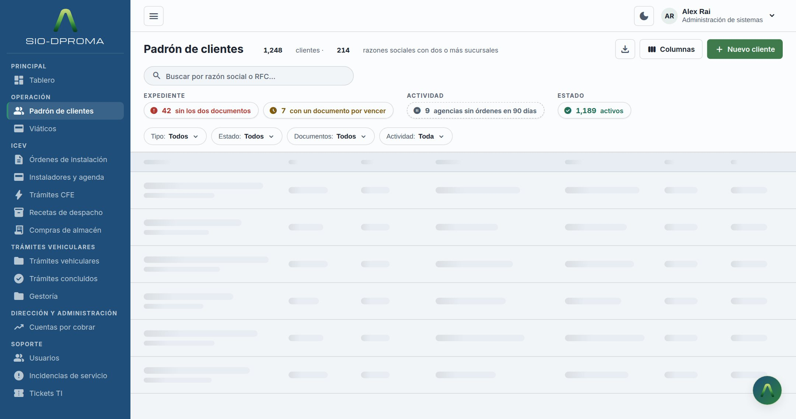
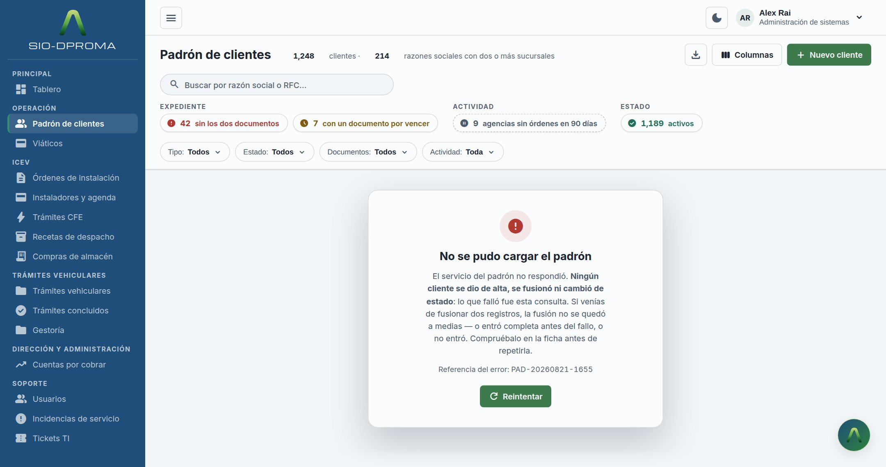
Vacío y error no son el mismo caso y no pueden llegar iguales. «Cero resultados» es
una consulta que fue bien y no encontró nada; «error» es una consulta que no llegó a
ejecutarse. La respuesta tiene que permitir distinguirlos sin adivinar, y el error tiene que
traer una referencia citable —del estilo PAD-20260821-1655— que la
pantalla pinta tal cual.
Todo destino interactivo mide 24×24 px como mínimo (WCAG 2.2, criterio 2.5.8), y 44 px si es la acción principal de la pantalla o el uso es en campo o tableta.
:root[data-tacto="dedo"] .it,
:root[data-tacto="dedo"] .iconbtn,
:root[data-tacto="dedo"] .btn{min-height:46px}:root no es adorno: es lo que hace que la regla gane
Con :root delante el selector suma (0,3,0); sin él se queda en (0,2,0) y lo
empata cualquier variante de tamaño del propio componente —.acciones .iconbtn{width:28px}—
que, al ir declarada después, gana por orden de aparición. La ficha lo escribió sin
:root y, con el modo dedo activado, sus botones de fila seguían midiendo
28×28. No es una infracción —28 supera el mínimo de 24— pero la regla no hacía nada, y
eso solo se ve midiendo.
Ese bloque existía en tres de las maquetas originales y nunca se activaba: el
atributo data-tacto no aparecía ni en el markup ni en el JS. Y aunque se hubiera
activado, dejaba fuera justo los dos casos que fallaban:
.selfila{display:flex;align-items:center;min-height:24px;padding:4px;margin:-4px}
input[type="checkbox"]{width:16px;height:16px;accent-color:var(--accent)}margin
negativo que compensaba el espaciado visual sin agrandar el área. Se les da
min-height:24px real.El suelo del texto son 12 px, con una sola excepción: rótulos de grupo en
mayúsculas con letter-spacing, que pueden bajar a 10,5 px porque el
espaciado y las versales compensan. Un dato que alguien tiene que leer —un RFC, una fecha, un
estado— nunca baja de 12.
Las cuatro maquetas definían .btn sin min-height: con
padding:8px 13px sobre el tamaño denso salían a 35 px, uno por debajo
de los 36 documentados. Un píxel no se ve, pero significa que la altura del botón dependía
del texto que llevara dentro. Hay que declarar el suelo.
27_padron_clientes.html — 932 líneasweb/entregables/propuestas/padron-clientes.html — 1.319 líneas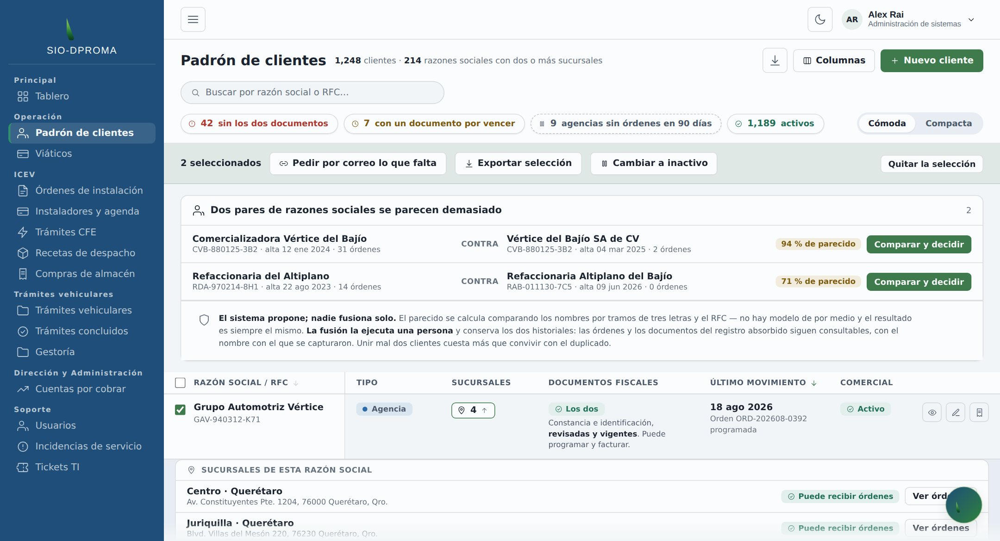
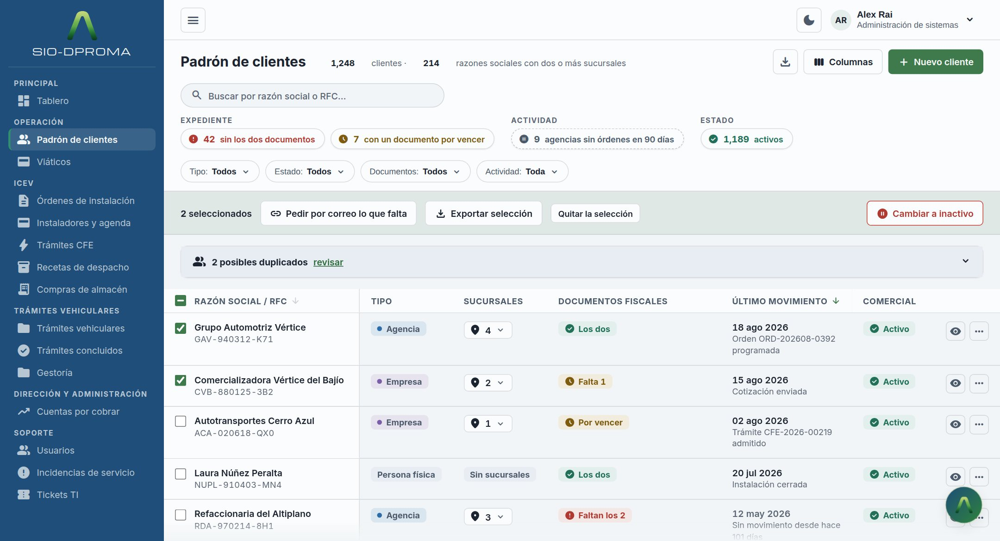
<svg> envoltorio repetía el
viewBox del <symbol> mientras el <use>
iba sin dimensiones. Un <use> sin width/height
toma el 100 % del viewport actual, no del símbolo: medido, el dibujo se
pintaba 32,5 px a la izquierda de su caja. Afectaba al logo de la barra lateral y al
botón flotante de las cuatro pantallas.--err y confirma nombrando a cuántos y a quiénes afecta. Y se puede
deshacer.<dialog class="confirmar" id="dlg" aria-labelledby="dlg-t">
<div class="interior">
<h2 id="dlg-t">Cambiar a inactivo</h2>
<p id="dlg-txt"><!-- se rellena con los nombres reales --></p>
<p>Dejarán de aparecer en el padrón activo. <b>Sus órdenes y documentos siguen
consultables</b>, y se pueden reactivar desde la ficha.</p>
<div class="acc">
<button class="btn" type="button" id="dlg-no">Cancelar</button>
<button class="btn destructiva" type="button" id="dlg-si">…</button>
</div>
</div>
</dialog>El texto nombra a los clientes afectados, no dice «2 elementos». Se abre con
showModal(), nunca con una clase: el diálogo nativo trae la captura de foco, la
tecla Escape y el velo sin escribir una línea.
21_ficha_cliente.html — 952 líneasweb/entregables/propuestas/ficha-cliente.html — 1.051 líneas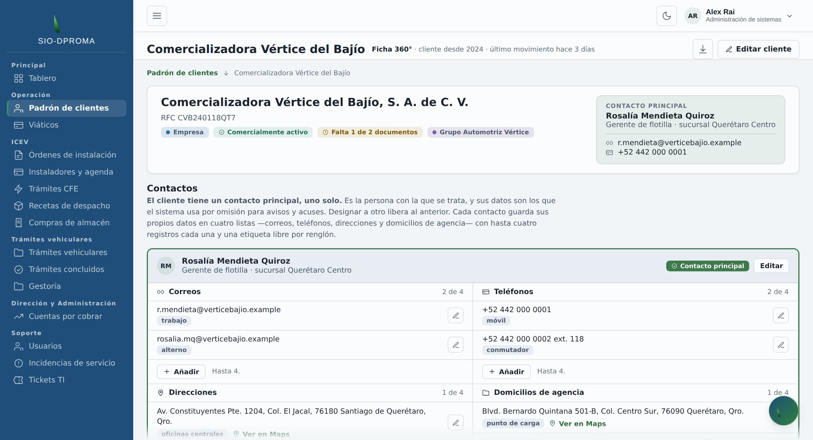
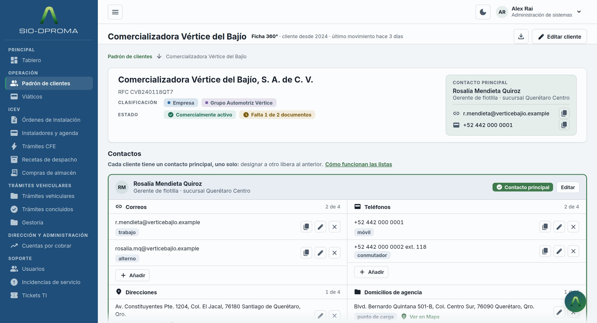
id repetidos —tope-CORREO,
tope-TELEFONO, tope-DIRECCION, l-DIRECCION-16—
porque el markup de un contacto se duplicó para el segundo. Un id repetido
rompe aria-labelledby y <label for>: el segundo contacto
queda apuntando a las etiquetas del primero..marcas{display:grid;grid-template-columns:auto 1fr;gap:var(--sp-2) var(--sp-4);
align-items:center;margin:0}
.marcas dt{font-size:10.5px;font-weight:700;letter-spacing:.09em;text-transform:uppercase;
color:var(--text-3);white-space:nowrap}
.marcas dd{margin:0;display:flex;gap:var(--sp-2);flex-wrap:wrap;align-items:center}Dos rótulos, alineados a la izquierda: CLASIFICACIÓN (qué es el cliente) y ESTADO (cómo está). La cuadrícula de dos columnas mantiene los valores alineados aunque los rótulos midan distinto.
<button class="iconbtn copiar" type="button" title="Copiar"
aria-label="Copiar r.mendieta@verticebajio.example"
data-copiar="r.mendieta@verticebajio.example">
<span class="msi msi-sm" aria-hidden="true" translate="no">content_copy</span>
</button>.iconbtn{width:36px;height:36px;border:1px solid var(--border);border-radius:var(--r-ctrl);
display:grid;place-items:center;cursor:pointer;background:transparent;
color:var(--text-2);flex-shrink:0}
.iconbtn:hover{background:var(--surface-2);color:var(--text);border-color:var(--border-2)}
.iconbtn.copiar.hecho{color:var(--ok-ink);border-color:var(--ok);background:var(--ok-bg)}Once botones: dos correos y dos teléfonos por cada uno de los dos contactos, más los del contacto principal en la cabecera. La confirmación cambia tres cosas a la vez, porque un cambio de color solo lo ve quien mira:
boton.classList.add('hecho');
glifo.textContent = 'check_circle'; // 1 · el icono
boton.setAttribute('aria-label', 'Copiado: ' + valor); // 2 · la etiqueta
live.textContent = 'Copiado al portapapeles: ' + valor; // 3 · el anuncio
setTimeout(function(){ /* …se revierte a los 1.600 ms… */ }, CONFIRMA);Y si falla, se dice: en silencio la persona creería que ya lo tiene. La maqueta lleva
un repliegue con textarea + execCommand('copy') porque
navigator.clipboard exige contexto seguro y las maquetas se abren también desde
file://. En producción, sobre HTTPS, el repliegue sobra.
id se generan, no se escriben. Cada contacto tiene cuatro
listas y cada renglón necesita identificadores únicos: derivarlos del id del contacto,
nunca del tipo de lista.DELETE (ver §5.4).41_alta_cliente.html — 807 líneasweb/entregables/propuestas/alta-cliente.html — 933 líneas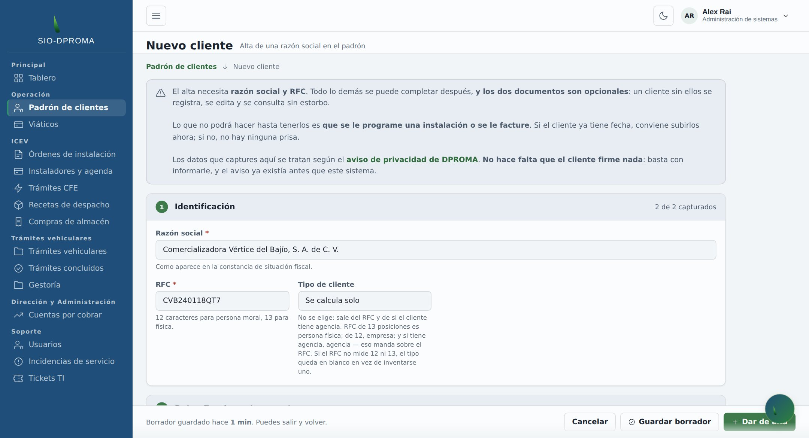
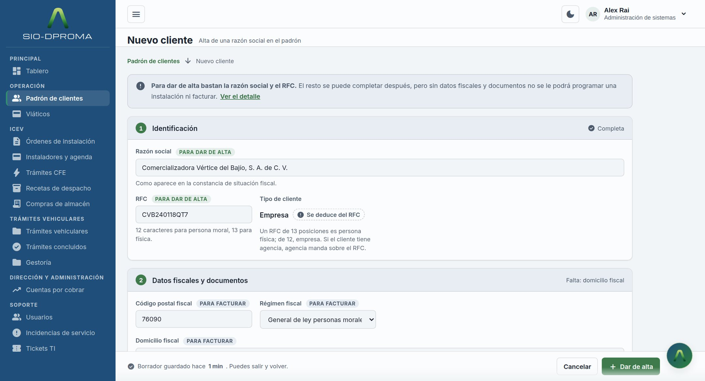
required en
todo el archivo: el asterisco era pintura.type="file" en la maqueta: se pedía escribir a mano el nombre de un
documento que hay que subir.<label for="rs">Razón social <span class="nivel nivel-alta">para dar de alta</span></label>
<input type="text" id="rs" autocomplete="organization" required aria-required="true">
<label for="cp">Código postal fiscal <span class="nivel nivel-op">para facturar</span></label>.nivel{display:inline-block;font-size:10.5px;font-weight:700;letter-spacing:.06em;
text-transform:uppercase;padding:2px 6px;border-radius:999px}
.nivel-alta{background:var(--accent-soft);color:var(--accent)}
.nivel-fact,.nivel-op{background:var(--surface-2);color:var(--text-2)}Cinco campos llevan required real y aria-required. La etiqueta
dice para qué hace falta, no que haga falta: es la diferencia entre «esto es obligatorio» y
«sin esto no podrás facturar».
«Completa» cuando lo está; «Falta: domicilio fiscal» cuando no. Un contador obliga a recorrer la sección buscando el hueco.
<div class="subida">
<input type="file" id="car" accept=".pdf" aria-describedby="a-car">
<label class="subida-caja" for="car">
<span class="msi" aria-hidden="true" translate="no">upload</span>
<span><b>Arrastra el archivo o pulsa para elegirlo</b><br>PDF, hasta 10 MB</span>
</label>
</div>
<span class="ayuda" id="a-car">Opcional para dar de alta; necesaria para programar y facturar.</span>Seis campos type="file", cada uno con su accept y su tope de
tamaño escrito donde se lee antes de elegir el archivo, no después de rechazarlo.
accept del navegador es una sugerencia del selector de archivos, no una
restricción.59_editar_cliente.html — 1.019 líneasweb/entregables/propuestas/editar-cliente.html — 941 líneas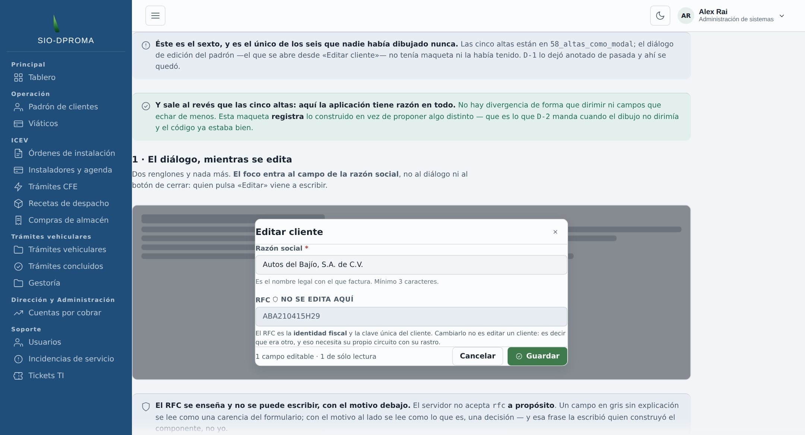
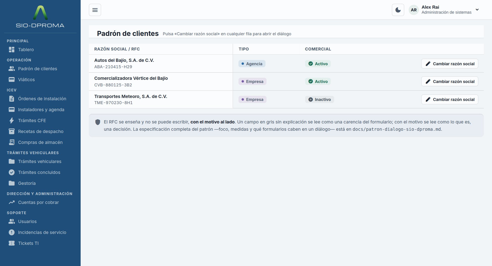
docs/patron-dialogo-sio-dproma.md.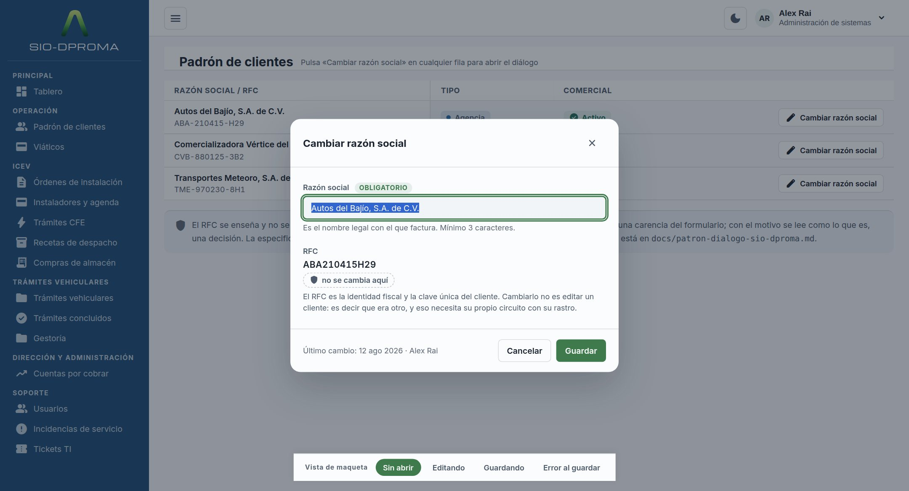
:modal y el foco entra
en el campo de razón social —no en el diálogo ni en el aspa—. Quien pulsa «Cambiar
razón social» viene a escribir.id repetidos cuatro veces cada uno —nombre-legal y
rfc-ro— porque el mismo diálogo estaba dibujado cuatro veces en la página
para ilustrar cuatro momentos. Ocho apariciones para dos identificadores.role="dialog" pintados a mano,
cero <dialog>: sin captura de foco, sin Escape, sin velo real.<dialog> nativo abierto con showModal(). Captura de
foco, Escape y velo vienen dados. Cuatro diálogos, cada uno con su propósito.aria-live.rfc entrante en esta operación, no ignorarlo en silencio.docs/patron-dialogo-sio-dproma.md. La regla corta: si no cabe sin
desplazamiento interno, no es un diálogo.Nueve hallazgos del informe de recomendaciones no se arreglaban con CSS: para resolverlos había que decidir cómo se comporta el producto, y esa decisión no estaba tomada en ninguna parte.
Se implementaron, porque dejar una pantalla a medias por no decidir cuesta más que decidir y
anotarlo. Pero son decisiones nuestras, no de DPROMA. Esta sección existe para que se
sepan cuáles son y se puedan revocar sin arqueología. El registro completo, con el
razonamiento de cada una, está en docs/decisiones-producto-padron.md.
El flujo del padrón —de la entrada del cliente al inicio del trámite, con los tres orígenes (ICEV, Gestoría, Comercial)— es diseño de proceso, no de interfaz. Explica por qué existen ciertos estados en estas pantallas, pero no se maqueta aquí.
Los hallazgos propios del diálogo de edición. Cuando se escribió el registro de decisiones, ese archivo original todavía no había llegado; llegó después y la pantalla se rehízo (§4.4). Esa nota del registro está desactualizada, y sus ocho hallazgos merecen una relectura contra lo que hoy está construido.
Esta sección es la que hace fiable al resto. Lo que sigue no está resuelto, y saberlo antes de empezar cuesta menos que descubrirlo a mitad.
La ficha arrastra 36 reglas de tabla y el alta 39, en pantallas sin una sola
<table>. Selectores como thead th[aria-sort],
.tabla-caja tbody tr:hover o .denso tbody th viajaron desde los
originales —donde ya sobraban— y no se limpiaron, porque limpiarlos habría hecho ilegible el
diff contra la maqueta entregada.
Al portar el CSS a componentes, no se traduce el archivo entero: se traduce lo que la pantalla usa. Una forma rápida de saberlo es contrastar cada selector contra el DOM renderizado.
El conmutador de estados aparece con dos nomenclaturas:
data-vista + .vista — en la pantalla de acceso, que es la que
el sistema de diseño (§6.4) documenta.data-state + .state-* — en las cuatro pantallas de clientes,
que es lo que muestra la §3.3 de este documento.Funcionan igual y ninguna está mal, pero hay que elegir una antes de escribir el primer componente y unificar. Si no, la divergencia se multiplica por cada pantalla nueva.
:root sigue latente
Se corrigió en la ficha, donde causaba el fallo medible. En padrón, alta y editar la
regla sigue escrita sin :root. Hoy no cambia nada, porque en esas pantallas no
hay una variante de tamaño que la empate; en cuanto se añada una, dejará de aplicarse en
silencio. Ver §3.4.
Nombres, RFC, folios y direcciones son inventados y consistentes entre pantallas para que
la navegación tenga sentido. No hay una sola llamada de red en ninguna de las cuatro.
Y el panel de andamiaje [data-andamio] del pie, que sirve para ver los cuatro
estados, no es una función del producto: se retira al construir.
icon_names: la comprobación de §3.2 sale vacía
en las cinco.id repetidos de la ficha (4) y de editar (2) están resueltos: cero en
las cuatro pantallas.aria-live con texto real.:modal) y coloca el foco
en el primer campo editable.| Documento | Qué contiene |
|---|---|
docs/sistema-diseno-sio-dproma.md1.510 líneas · 11 secciones · v1.5.0 |
El sistema completo: color con contrastes medidos, tipografía, espaciado, movimiento, 19 componentes con su CSS, layout, voz de producto, seis trampas comprobadas y la lista de comprobación para añadir un componente nuevo. |
docs/decisiones-producto-padron.md195 líneas |
Las nueve decisiones de la §5 con su razonamiento completo, y lo que se dejó fuera a propósito. |
docs/patron-dialogo-sio-dproma.md110 líneas |
El patrón de diálogo: foco, medidas, salidas, comportamiento mientras hay una operación en vuelo, y qué formularios caben en un diálogo y cuáles piden pantalla. |
docs/criterios-de-animacion.md |
Duraciones, curvas y qué se anima. Y qué hace prefers-reduced-motion,
que no es solo animation:none. |
docs/roadmap-supabase.md |
El plan de datos: esquema, fases y qué habilita cada una. |
web/entregables/reglas-de-diseno.html |
El sistema publicado como página navegable, con muestras vivas de cada componente en
los dos temas. Incluye el .md descargable. |
docs/entrega/metricas.py |
El script que recalcula la tabla de la §2 desde los archivos originales y los propuestos. Si alguien toca una pantalla, esto dice si las cifras siguen siendo ciertas. |
Documento generado desde el repositorio del proyecto. Las cifras de la §2 y las comprobaciones de la §6 se recalculan desde los archivos; las capturas se generan con el navegador a partir de los originales entregados y de las propuestas publicadas.